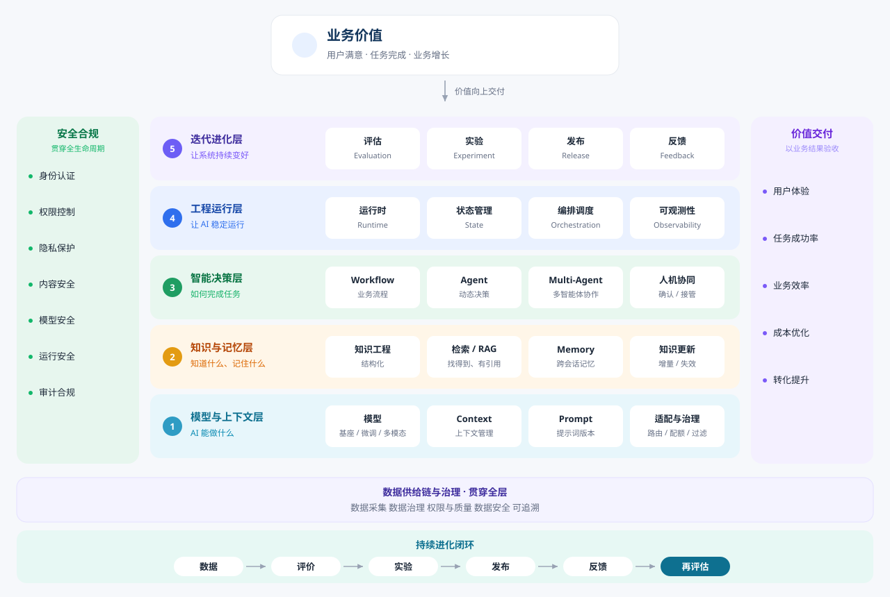
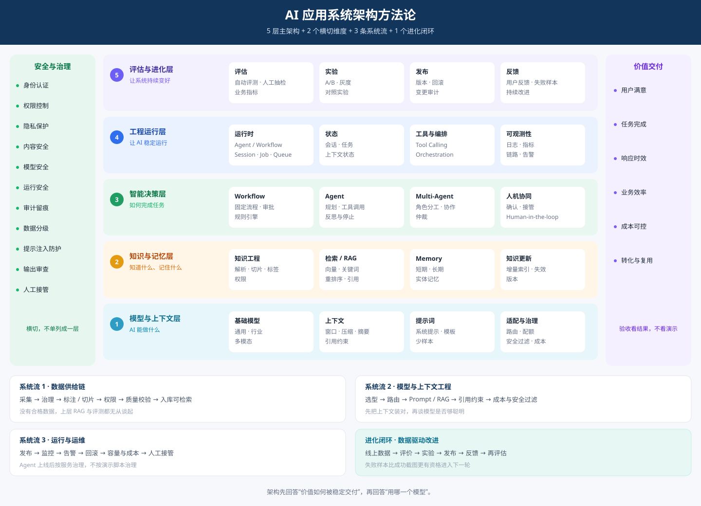
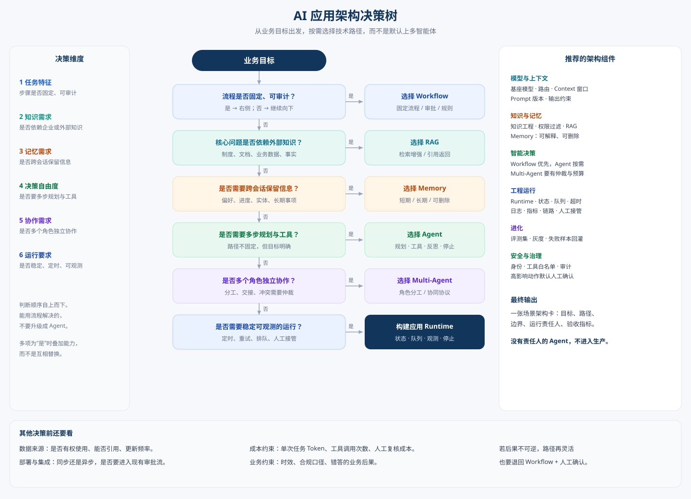

顶层业务价值：用户满意、任务完成、业务增长。「价值交付」表示下层每一级均服务于上述结果，而非为技术完整度服务。
五层能力栈自下而上：模型与上下文界定能力边界；知识与记忆承载依据与延续；智能决策完成任务路径；工程运行保障稳定生产；迭代进化使系统持续改进。
请输入访问密码以继续浏览
Enterprise AI Agent Architecture
本体系回答的不是「模型能不能聊天」，而是企业智能体如何被设计成可交付、可治理、可排障、可进化的系统。主线口径：五层向上交付价值，两侧横切约束风险，三条流驱动运行，十条边界划清责任，一棵决策树锚定技术路径。
业务价值架构：先锚定结果，再展开层次。价值自上而下贯穿五层能力栈，安全与合规横切全程。

顶层业务价值：用户满意、任务完成、业务增长。「价值交付」表示下层每一级均服务于上述结果，而非为技术完整度服务。
五层能力栈自下而上：模型与上下文界定能力边界；知识与记忆承载依据与延续；智能决策完成任务路径；工程运行保障稳定生产；迭代进化使系统持续改进。
Agent 不是单点对话框，而是向上的价值链：底层供能、中层履约、顶层以评估、实验、发布与反馈驱动演进。安全合规贯穿检索与工具调用；验收仅以业务结果为准。
数据供给链与进化闭环并存，保证系统在运行中可靠性不断提升，而非一次性演示后即停滞。
将 5 + 2 + 3 + 1 拆解为可建设、可验收的组件与流，形成统一建设与评审口径。

评估与进化层：自动评测、人工抽检、业务指标、A/B 与灰度、可回滚发布、失败样本回流。工程运行层：Agent / Workflow Runtime、会话与任务状态、工具编排、日志指标链路与告警。智能决策层：固定流程、单智能体规划、多智能体分工及人机确认节点。知识与记忆层：解析切片、带权限检索、短长期记忆、索引更新与失效策略。模型与上下文层：模型路由、窗口与摘要、提示词模板、安全过滤与成本配额。
安全与治理、价值交付须嵌入每一次检索、工具调用与发布。身份、权限、隐私、内容、审计、人工接管构成安全横切；任务完成度、时效、成本、转化构成价值横切。安全不是附录文档，价值不是上线后的主观感受。
数据流保证知识洁净与权责清晰。控制流保证从目标到停止条件可追踪。价值流保证优化指标与业务对齐。进化闭环将线上轨迹沉淀为评测资产，进入实验与发布。四者缺一，系统停留在「可演示」阶段。
架构交付不以制图完成为终点。将排障从个人经验收敛为可重复的五步动作与分级响应。

发现问题：评估影响面与分级，安全类事件立即切断工具与外发。定位范围：由网关、鉴权、运行时、决策、检索记忆至模型供应商逐层切分。分析原因：以会话 ID、版本、检索片段、工具入参出参对照，单变量假设。解决问题：先降级、回滚、限流，再补知识、收紧停止条件、扩充评测。复盘总结：记录被突破的边界，并回写决策树与发布门禁。
Agent 故障常表现为「调用成功、业务错误」。诊断地图将正确性、权限、成本与幻觉纳入统一分级。无会话编号与模型版本不启动根因分析。恢复动作优先于叙事性根因；根因必须可转化为下一版发布门禁。
将「模型能力」收束为可执行的否决项与责任锚点。每条边界对应五层中的具体执行位置。

三条追问统一评审口径：是否越过边界——替人决策、超授权知识、工具无失败语义、高影响动作无人确认；边界在五层哪一层执行——提示词版本在模型层、权限在知识层、停止与预算在运行层、验收阈值在进化层；谁验收、谁可停止、谁担责。答不清的能力不纳入当期交付范围。
责任边界与数据边界需显性化：生成内容可辅助起草，不替代制度、审批与最终签字。训练数据、索引、日志与导出隔离；敏感内容默认可不进模型。运行边界要求超时、重试、并发与成本有上限，并保留可操作的紧急停止开关。
技术选型由业务问题出发；路径可组合，但不得跳过更简方案。

决策树非互斥六选一；场景可同时需要流程、检索与运行时。禁止跳步：未验证流程不足即上多智能体；未划清数据与权限即直连写接口。不可逆动作一律退回「流程 + 人工确认」。
交付物为场景架构卡：目标、路径、边界、运行责任人、验收指标——而非孤立概念图。
架构完成的标志，是四个问题均有明确负责人与可度量结果。
用户任务是否被完成；依据是否来自授权知识；高风险动作是否有人工确认；系统劣化时是否能在单条闭环内被发现并回滚。五张架构视图为同一口径的五个切面——后续评审、排期与故障复盘沿用同一套词汇，避免项目间重复定义架构层。
滚轮以指针位置缩放 · 拖拽平移 · 双击放大/还原 · Esc 关闭